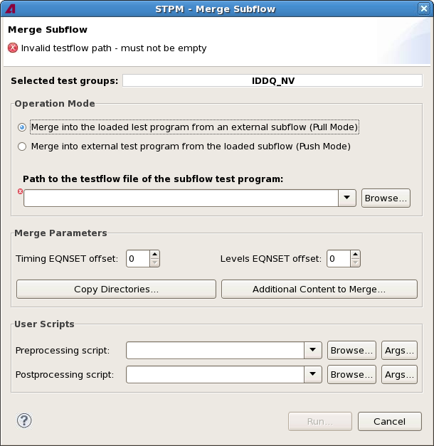

Merge Subflow dialog
The Merge Subflow dialog lets you set the parameters for merging test groups from a source test program (STP) with a master test program (MTP). Its options correspond to the parameters of the merge_subflow control file command.
Merging a subflow with this command replaces test groups in the MTP with test groups with the same name from the STP.

The dialog is opened by the Merge Selected command from the STPM menu. It contains these fields and options:
- Content error message: The message at the top of the dialog, just below the title,
notifies you of any errors or warnings caused by your settings, for example, an empty testflow
path:
 : This icon indicates an error. The error is noted in the message, and the offending
field or option is marked with the same icon. The Run button is disabled until the problem is
resolved.
: This icon indicates an error. The error is noted in the message, and the offending
field or option is marked with the same icon. The Run button is disabled until the problem is
resolved. : This icon indicates a warning. The problem is noted in the message, and the
offending field or option is marked with the same icon. You can, however, still click Run to
execute the command with this setting.
: This icon indicates a warning. The problem is noted in the message, and the
offending field or option is marked with the same icon. You can, however, still click Run to
execute the command with this setting.
- Selected test groups: The test groups that you have selected in the
testflow before choosing this command.
- Pull mode: The test groups will be replaced by test groups with the same names from the external STP (source test program) specified in the test flow file path field (see below).
- Push mode: The test groups will be integrated into the MTP (master test program) specified in the test flow file path field (see below), replacing groups with the same name there.
- Path to the testflow file of the subflow test program: In pull mode,
the name and path of the testflow file for the STP from which the test groups are imported into
the currently loaded MTP.
In push mode, the field is named Path to the testflow file of the master test program and lets you specify the testflow file of the MTP into which the selected test groups are merged on disk.
Clicking Browse lets you choose a testflow file from disk.
This field corresponds to the test_flow_file parameter of the merge_subflow command.
- Merge Parameters: In this section, you specify the details of the merging process:
- Timing EQNSET index offset: The number that is added to every
timing equation set index during the import.
This field corresponds to the tim_eqnset_index parameter of the merge_subflow command. Specifying 0 here has the same effect as the keep option in the command. Specifying a number if the same as keep+<number>.
- Levels EQNSET index offset: The number that is added to every level
equation set index during the import.
This field corresponds to the lev_eqnset_index parameter of the merge_subflow command. Specifying 0 here has the same effect as the keep option in the command. Specifying a number if the same as keep+<number>.
- Copy Directories: Clicking this button opens a dialog where you can
specify subdirectories of the MTP device directory that are also copied to the device
directory of the extracted subflow.
This option corresponds to the copy_static_content parameter of the merge_subflow command.
- Additional Content to Keep: Clicking this button opens the Keep Timing dialog where you can specify settings that are merged even if they are not used
in the subflow. (By default, only settings that are used in the subflow are merged into the
MTP.)
The options in the dialog correspond to the timing_mode, keep_wavetables, keep_tim_eqnsets, keep_specifications, levels_mode, keep_lev_eqnsets, pattern_mode, and keep_pattern_files parameters of the merge_subflow command.
- Timing EQNSET index offset: The number that is added to every
timing equation set index during the import.
- User Scripts: In this area, you can specify scripts that are executed
before or after the Merge Subflow command:
- Preprocessing script: You can specify any executable script to be
executed when you click Run, before the merge_subflow command itself is executed.
Clicking Browse lets you choose a script file from disk.
Clicking Args lets you specify which arguments to pass to the script. (The script is assumed to know how to handle these arguments.)
- Postprocessing script: This is similar to Preprocessing script, except that the script is run after the merge_subflow command has been executed.
- Preprocessing script: You can specify any executable script to be
executed when you click Run, before the merge_subflow command itself is executed.
- Run: Clicking this button performs the merge operation with the specified settings. The progress of the command is displayed in the STPM console view which is automatically opened.
Functional changes
- Introduced in SmarTest 7.2.2